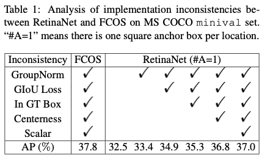
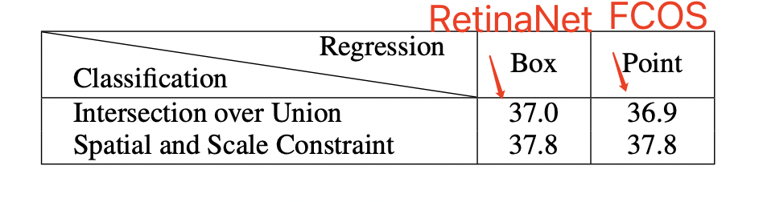
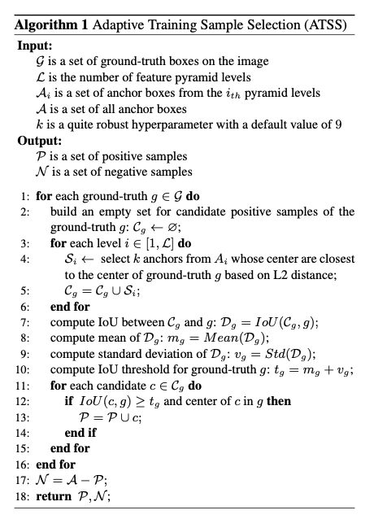
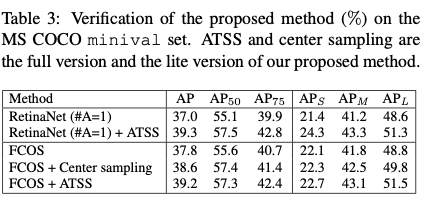
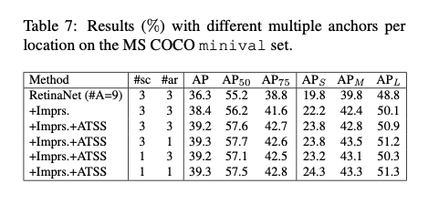

论文: Bridging the Gap Between Anchor-based and Anchor-free Detection via Adaptive Training Sample Selection
简述：论文指出one-stage anchor-based和center-based anchor-free检测算法间的差异主要来自于正负样本的选择，基于此提出ATSS(Adaptive Training Sample Selection)方法，该方法能够自动根据GT的相关统计特征选择合适的anchor box作为正样本，在不带来额外计算量和参数的情况下，能够大幅提升模型的性能，十分有用。
背景：RetinaNet是一个anchor-based检测模型，FCOS是一个anchor-free检测模型，两者有三点不同：
| RetinaNet | FCOS | |
|---|---|---|
| 1.每个位置的anchor数 | RetinaNet每个grid cell有几个anchor box | FCOS每个位置只根据一个anchor point来回归bbox |
| 2.正负样本的定义不同 | 根据IoU来区分正副样本 | 根据选择样本的空间和规模限制（即gt框中心周围的一部分区域的点作为正样本。） |
| 3.回归的对象不同 | 回归anchor box的偏移值 | 回归点到bbox四条边的距离 |
实验中FCOS比RetinaNet的效果要好
实验：论文选取anchor-based方法RetinaNet和anchor-free方法FCOS进行对比，主要对比正负样本定义和回归开始状态的差异，将RetinaNet的anchor数改为1降低差异性，方便与FCOS比较，后续会测试anchor数带来的作用。
首先将FCOS上有的tricks加在RetinaNet上

现在FCOS和RetinaNet只有两个不同：
1.正负样本的分配
2.回归对象的不同
而此时FCOS比RetinaNet高0.8个点，所以再验证这两个不同的影响：

又上图得RetinaNet将IoU阈值分配正负样本（与yolov3相同）换成点和区域分配正负样本时，涨点了，而FCOS使用IoU阈值时反而掉点了
后续实验验证回归对象的时候发现对象不同几乎不影响mAP。
因此作者得出结论：
FCOS的表现比RetinaNet要好主要是因为FCOS的正负样本分配策略更好。
因此对于anchor-based模型，为了消除anchor超参数的影响，提出
Adaptive Training Sample Selection (ATSS)
自动根据物体的统计特征划分正负样本，几乎没有任何超参数。

先选出每一层的所有预测框中与真实框L2距离最小的k个预测框，计算这些预测框与每一个gt框的IoU，统计这些IoU值的均值m和均方差v，则IoU阈值t=m+v。如果一个预测框与某个gt框的阈值大于t，则为正样本，否则为负样本。
m：为了有合适数目的正样本，如果m很大，说明有许多高质量的预测框，则IoU阈值应该更大；如果m比较小，说明预测框的质量不太好，IoU阈值应该更小
v：如果v较小，说明有几个特征层都适合完成当前的检测任务，所以m+v的值更小，则选取更多正样本；如果v较大，则说明有某些特定的特征层更适合完成当前目标的检测任务，所以IoU阈值更大，来选取更合适的特征层上的检测框
根据统计学理论，IoU值在阈值t以上的预测框大概在16%左右，每个目标物体大概会分配 （0.2 k 特征层数 ）个正样本。该方法只引入了一个超参数k，而且k对结果的影响并不大，一般设置为9，因此本算法可以近似看做不增加超参数。

- 将RetinaNet中的正负样本替换为ATSS，AP提升了2.9%，这样的性能提升几乎是没有任何额外消耗的
- 在FCOS上的应用主要用两种：lite版本采用ATSS的思想，从选取GT内的anchor point改为选取每层离GT最近的top $k$个候选anchor point，提升了0.8%AP；full版本将FCOS的anchor point改为长宽为$8S$的anchor box来根据ATSS选择正负样本，但仍然使用原始的回归方法，提升了1.4%AP。两种方法找到的anchor point在空间位置上大致相同，但是在FPN层上的选择不太一样。从结果来看，自适应的选择方法比固定的方法更有效
这里的RetinaNet只用了一个anchor box，如果使用多个anchor box，结果如下：

Imprs为用在了FCOS中的提升手段。从结果来看，在每个位置设定多个anchor box是无用的操作，关键在于选择合适的正样本
论文结论：
1.这两种方法之间的本质区别是正负训练样本的选择，这导致了它们之间的性能差距。如果他们在训练期间选择相同的正负样本，无论是回归anchor bbox或anchor point，最终表现都没有明显的差距。
2.通过一系列实验，可以得出结论，没有必要在图像上每个位置设置多个anchor box来检测物体。
3.相同的主干网络下，ATSS方法能够大幅增加准确率，十分有效